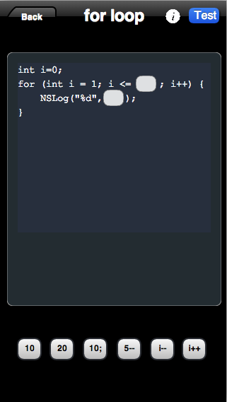
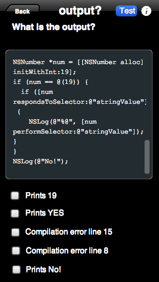
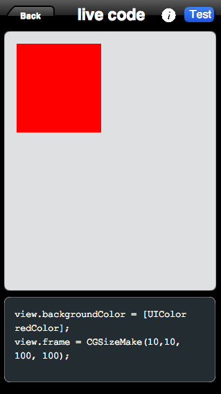

# Code Academy for Mobile platform #
### Considerations and ideas ###
## Considerations ##
### Typing on the phone ###
- It is not as fast as a regular keyboard.
- Accessing special characters (';', '{'...) requires more touches.
- Keyboard takes up a lot of screen real estate.
- Custom Keyboard?
## Considerations ##
### Size of the screen is limited ###
- 100 characters per line as code guideline.
- Horizontal Scroll?
- Rotate screen?
- Navigation controls.
## Considerations ##
### Engagement and session time ###
- Fast exercises, aiming for a 5-10 min work before you get prize/satisfaction.
- Connectivity issues: Can we code offline?
## Exercises ##
### Fill in gaps ###
- Have chunks of code with empty textboxes for the user to fill.
- Implement a Floy Layout on iOS.
- User does not have to type a lot.
## Exercises ##
### Move Boxes around ###
- No typing at all.
- Boxes could be used in the middle of normal text or just by dragging them.
### Move Boxes around ###

## Exercises ##
### Result of a piece of code ###
- Typing is minimal.
- If we offer select options, typing would non existent.
### Result of a piece of code ###

## Flows ##
### Concept of lesson ###
- A lesson will contain a certain number of exercises.
- A lesson should be completed within 10 minutes.
- A lesson would be completed if a certain amount of exercises are correct.
- API should be able to create random exercises that look similar and test the same concept.
- A lesson will contain a certain number of exercises.
## Flows ##
### Objective C is a dynamic Language ###
- It is possible to create new classes, methods, etc...
- Code could run in the iPhone.
- Creating shapes, changing colors, etc...
- Solution to space: use boxes again, but see results in your phone.
### Objective C is a dynamic Language ###

## Flows ##
### Engage user ###
- Daily exercise.
- Write your own exercises.
## Rest of interactions/features ##
### Q&A, groups, etc... ###
- Native vs HTML5 (UIWebview).
- Glossary: definitely UIWebview (caching, search?).
## Power of the mobile device ##
### Some crazier ideas ###
- Location Services?
- Push Notifications.
- Contacts?
- Call for help?